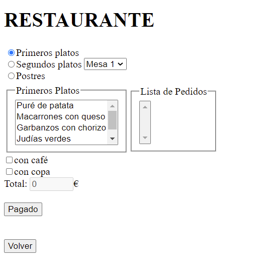
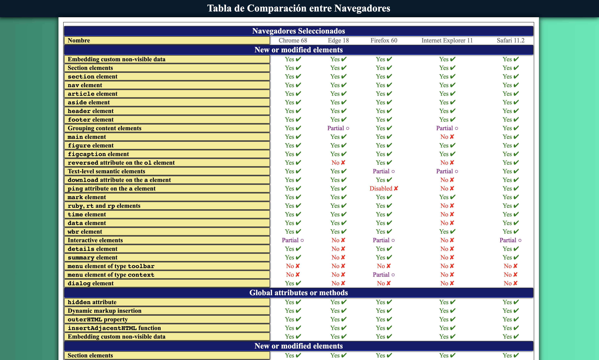
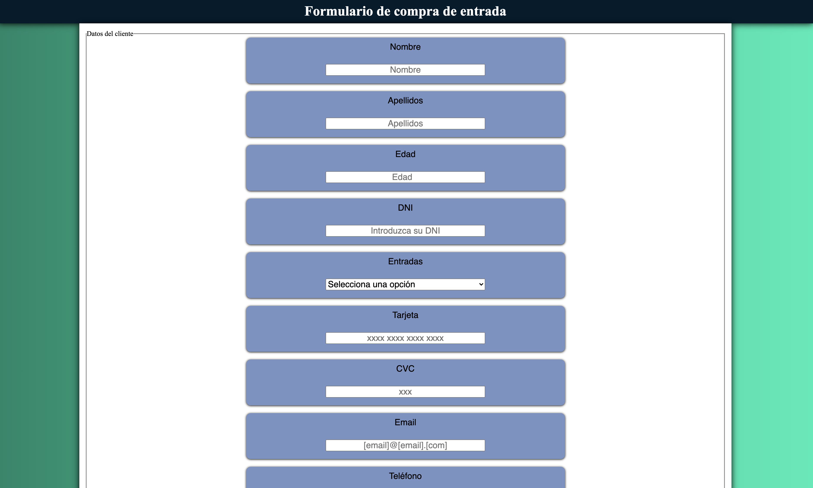
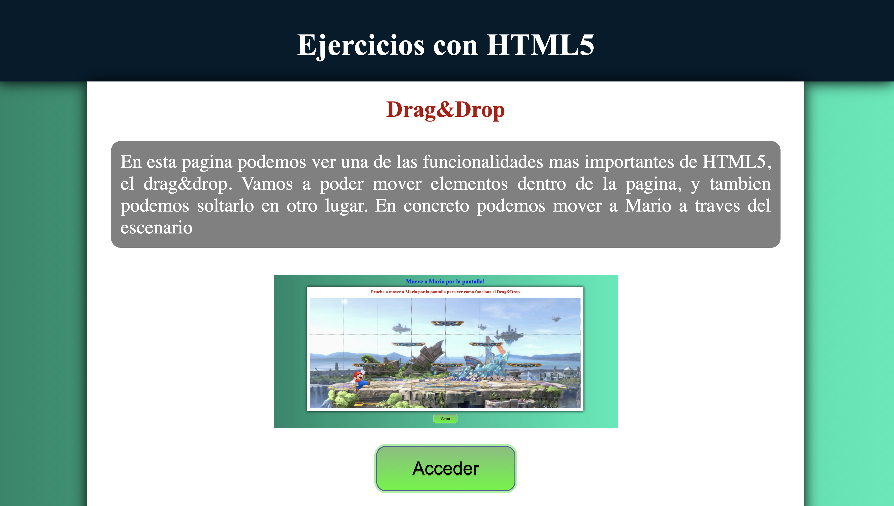

Ejercicio JavaScript
Descripcion
Se pide construir una aplicación (Restaurante v1) que base en el lenguaje JavaScript con la ayuda de la librería JQuery, para gestionar los pedidos de las mesas de un restaurante.

Ejercicios con lenguaje HTML5
Descripcion
Se presentan algunos ejercicios en los que se ve la aplicacion directa del lenguaje HTML5
Ejercicio 1: Comprobación de funcionalidades en navegadores
El objetivo del ejercicio es realizar una tabla comparativa de las características de HTML5 que aceptan y no aceptan diferentes navegadores y versiones de éstos.

Ejercicio 2: Creacion de pagina con elementos multimedia
El objetivo de este ejercicio práctico es el diseño y programación de una página web en la que se muestren los gustos cinematográficos del alumno, incluyendo 3 elementos multimedia

Ejercicio 3: Creación de página con formulario para su auto-validación
El objetivo del ejercicio es diseñar y programar una página web en HTML5 en la cual se solicite y valide un formulario con los campos de registro típicos para que un usuario pueda comprar una entrada de cine

Ejercicio 4: Ejercicio práctico de creación de páginas con otras funcionalidades
HTML5 permite trabajar con sockets, eventos Drag & drop, trabajar off-line, geoposicionamiento, bases de datos basadas en SQLite, etc. Diseñar y programar al menos 4 páginas web que utilice alguna de las funcionalidades anteriores.

Extensión del Ejercicio JavaScript.
Descripcion
Cogiendo como base la solución del ejercicio de JavaScript, rehacerlo (restaurante v2) para que se incorporen páginas HTML 5 y aplicando estilos con CSS3, que extiendan la funcionalidad básica del restaurante ya realizada.